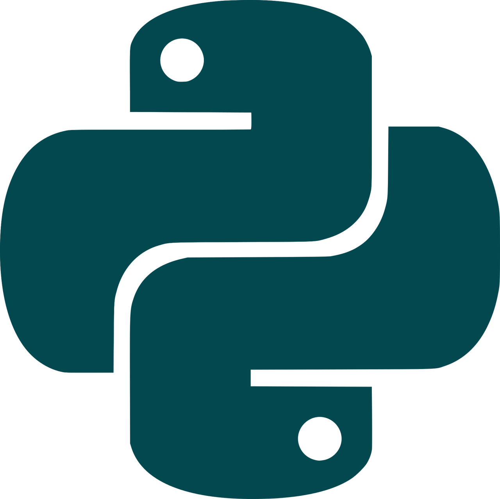

Project

KeepIt is an iOS App built to help users keep track of all their personal belongings without the use of gps hardware. It does this through customizable notifications that can be timed or triggered upon crossing the border of a personalized GeoFence. Whenever you lose an item, you can use KeepIt to remember where you had it last.